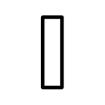
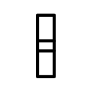
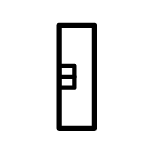

Sign
M176
Looks like: vertical line with short strokes off one side along its whole height
Adapted from the field-cady sign descriptions (Parpola 098). This describes the picture, not the meaning: a sign that looks like a fish may stand for a sound or another word.
Appears in 188 texts (355 uses), on seals and sealings at Harappa and Mohenjo-daro; usually ends a text. In the larger ICIT corpus its Wells equivalent W400 is in 287 texts, including at Dholavira.
Where it appears 188
Counts are distinct texts in the Mahadevan 1977 concordance (a text repeated on many moulded tablets counts once). 343 objects in all carry it.
| Object | Texts | Share |
|---|---|---|
| Seal | 75 | 40% |
| Sealing | 66 | 35% |
| Tablet | 35 | 19% |
| Pottery | 2 | 1% |
| Other | 10 | 5% |
| Site | Texts | Share |
|---|---|---|
| Harappa | 93 | 49% |
| Mohenjo-daro | 82 | 44% |
| Kalibangan | 7 | 4% |
| Chanhu-daro | 3 | 2% |
| Other sites | 2 | 1% |
| Lothal | 1 | 1% |
| Where | Uses | Share |
|---|---|---|
| First sign | 0 | 0% |
| Inside | 39 | 20% |
| Last sign | 157 | 80% |
| Whole text | 1 | 1% |
Position counts use only texts with no damaged passage (197 uses).
In the ICIT corpus (Wells numbering)
W400: 287 distinct texts, 502 uses.
By object: tablets 187, seals 73, pottery 15, other objects 10, sealings 2. Top sites: Harappa 197, Mohenjo-daro 69, Dholavira 5, Kalibangan 5, Nausharo 3, Chanhu-daro 2.
Variants
Wells (ICIT) equivalent: W400.
Probably the same sign (looks alike and is used alike):
 M242drawing similarity 0.67, context similarity 0.90
M242drawing similarity 0.67, context similarity 0.90
Looks alike but used differently (probably a separate sign):
 M127drawing similarity 0.69, context similarity 0.27
M127drawing similarity 0.69, context similarity 0.27 M128drawing similarity 0.70, context similarity 0.14
M128drawing similarity 0.70, context similarity 0.14
M237drawing similarity 0.70, context similarity 0.14 M247drawing similarity 0.70, context similarity 0.16
M247drawing similarity 0.70, context similarity 0.16
Pairs from the prior project’s allograph model (image × distribution, signs with at least 8 uses).
Merged with other signs in alternative sign lists (used to test whether findings survive):
- Merged by drawing (coarse) M237

M238
M239
Neighbours and fixed pairs 2
Comes after
Signs read directly before or after it, counted in distinct texts, never across a line break or damage.
Fixed pairs
At least 5 texts, and one sign takes the other at least half the time.
Fixed sequences in the functional reading
Published readings 2
- Fuls · 2024Not tested on its own
ni
Fuls 2024 IJAS 14(1):3-16 Fig.9 (values: Desset et al. 2022); Fuls says the scripts are NOT directly related
A Linear Elamite sign that looks like this one, with its Linear Elamite sound value. Fuls lists look-alikes; he does not claim the Indus sign has this value.
Yajnadevam’s sound value
- Yajnadevam · 2024Did not hold
i
Yajnadevam 2024 ‘A cryptanalytic decipherment of the Indus script’; per-sign key from yajnadevam/lipi xlits.csv via sources/field-cady_indus_valley_script_corpus/xlits.csv · test record
Part of a 714-value sound key that scores no better than keys fitted to noise (atlas 1.1).
From proposals.json and CATALOGUE.csv. A claim is listed under every sign it names.
Project tests 23
Role in the text
- Positional class
- Unclassified. Its raw label was post-closer, but it did not keep that label reliably. Grammar
- Functional reading
- POST-CLOSER CLITIC 1.00. Document-type clitic (tablet/rod register). optional post-closer (novel_methods exp1, phonetic_grid); rods/tablets enriched, seals 0.2x, replicated ICIT W400 (context Q2) Functional reading
Role names such as opener or noun are labels for positions, not tested meanings.
Mentioned in 23 result files
- Phonetic grid (automated Kober triplets + Ventris grid)9 lines. “…whole words, not morphology. The only suffix-like behaviour is optional elements after the closer (M176, M1). Munda nominal case is also suffixing, so even that does not separate the candidate langua…”
- Functional reading: a role grammar that “reads” every Indus text without phonetics7 lines. “…hich counting system they belong to, which sign closes it, whether it carries the tablet/rod clitic M176, whether it holds a shared title block, and whether it has the tablet-reverse docket formula. F…”
- Novel methods from other fields: results7 lines. “…ity and position match the bigram null. Classes predict held-out swaps (p = 0.002). Optional signs: M176 (post-closer), fish variants (initial).”
- Internal phonetics: does Indus spelling variation leak sound values?5 lines. “…composition 3/50 planted triples (16/50) 2.9 (5.0) spurious triples per corpus 1 triple (M12 ↔ M342 M176) against 6.7 in Indus-bigram corpora. 0 events for every graphic candidate M12 triple absent; c…”
- Red team: attacks on the project’s positive claims5 lines. ““jar+M176 is a rod register””
- Administrative archaeology: relational readings without sounds3 lines. “…30-M149, M249-M161, M387-M59, M171-M59), openers (M267, M293, M391, M150, M216) and register signs (M176, final M342, final M211) were tested against excavation area within site × object type × length…”
- A positional grammar of the Indus seal text3 lines. “Post-closer: M176, M1 and a few others can follow a closer as the very last sign. This class was not stable”
- Iconography: what do the signs depict, and does it matter?2 lines. “Closers are not vessels: 2/17, expected 1.4, p=0.42. Besides the jar M342, closers are mostly “tools”, e.g. arrow M211 and comb M176.”
- Literature map: Indus script research, with emphasis on 2015-20262 lines. “The jar M342 is the commonest sign and ends about 70% of the texts it appears in. Other terminal signs: M176, M211, M1.”
- Structure of the Indus texts: direction, inventory, positional classes, segmentation, grammar2 lines. “Asymmetry. The first position is diverse: 291 sign types, H=6.69 bits. The last position is concentrated: 196 types, H=4.94 bits, with the top five closers M342, M176, M211, M169, M1.”
- One-to-many substitution (X YZ): does a single sign ever trade places with a 2-3 sign spelling?2 lines. “M321 = M89 M211 2 0.002 0.001 2844 M336 M321 M176 \ \ 1251 M72 M336 M89 M211 M176 SCE; M336 + {M321 \ M89 M211}; held-out 0”
- Consensus corpus: the nine headline tests at the real transcription error rate1 line. “Mahadevan writes some signs twice where Wells has one “double” sign. M245 M245 = W617, M176 M176 = W401, M375 M375 = W792, plus 6 single cases. This one convention had been counted as a substitution p…”
- Context and meaning: which signs go with non-textual context?1 line. “…rroni over 17 tests. Replicated: copper M169/W407, M407/W845, M18/W095, M97-M25, M252-M97; rod M342-M176 and M176; tablet M176/W400; seal M99/W002 and M391/W820. Failed: the M77 “sealing” survivors. M…”
- Detached signs: a layout class, but not a class apart from the text1 line. “Check whether other closers (M211, M176, M342) are also set on their own line on large faces, beyond what face size predicts. If they are, detachment is a layout rule for closers and not a sign class.…”
- Dominik 2026: “W090 follows W740 but never W520” (board task #19, M5, agent H4)1 line. “M342 followers in M77 reading order: M176 73, M1 67, M98 12.”
- Linear Elamite as a bridge to the Indus script?1 line. “H3 M77 replication of H1 (7 bridged signs: M127, M135, M176, M192, M233, M245, M379) +0.107; AUC 0.61; p = 0.14 same direction, not significant”
- Genres from scratch: unsupervised text types checked against objects (board #34, N2)1 line. “a short type ending in M176 or the M162 count frame, which has the most tablets.”
- Project-wide multiple-testing ledger1 line. “M99 never dropped, M176 droppable (phonetic_grid) v1 held-out pairs were leaked near-copies; v2 has too few within-family events to test (internal_phonetics counts 46) untestable on v2; keep as dev-on…”
- local_repeats: what are the repeated 4+ sign seal texts?1 line. “The added sign is not always the same and lands in different positions: W400=M176 twice at the end, W033=M89 at the start, and W233, W142, W621.”
- Rank ladder: do Indus title signs track status on the object? (Baer’s method)1 line. “Did not replicate: W400 (M176, post-closer) went from -30% on dev to -4% on held-out (it is a tablet/rod clitic and rare on seals). W405 (+26%, n = 5) and W390 (-10%) kept their direction but were not…”
- Red team #38: does the consensus corpus result (#35, N3) hold up?1 line. “…data) and M175/M205 (below my threshold). It also finds the same three doubled signs (M245 to W617, M176 to W401, M375 to W792), plus two narrowings N3 did not make (M103, M358). On all 469 objects it…”
- Space and sealing: what small seals leave out, and whether sealings differ from seals (Fable plan 5, T4 and T6)1 line. “Post-closers (M176, M1): -0.009, Holm p = 0.019.”
- Open Indus: reproducible tests on the Indus script1 line. “…Real order beats every permutation of its own signs far above chance, and still does with the jar, M176, M267, M391 and M99 deleted. It fits a grammar or a fixed formula equally: the test shows seque…”
Example texts 3
Text 1046 · Mohenjo-daro · seal · M311 M211 M176
Text 1529 · Mohenjo-daro · ivory/bone rod · M67 M103 M403 M342 M176
Text 1615 · Mohenjo-daro · sealing · M389 M65 M249 M169 M342 M176
Signs in reading order, first sign on the left. Text numbers are Mahadevan’s (1977). / marks a line break, … a damaged passage.